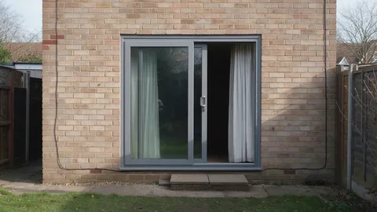

Generated photo
Generated photoGenerated for this demo. Not a photograph of a real job.
The thing people are actually worried about
Not the windows. The mess, the cold, and the feeling of their house being open to the street with strangers in it. Fair enough. So here is the day, honestly, including the parts nobody mentions at the quote.
Before the van arrives
You do not need to empty the house. What helps is small and takes twenty minutes.
- Clear the windowsills. Ornaments, plants, photographs, the lot. Anything left on a sill gets moved by somebody who does not know it was your nan's.
- Take the curtains and the blinds down, including the poles and the brackets if they are fixed to the frame or the reveal. If the brackets are on the frame, they are coming off with it.
- Move furniture about a metre back from each window. We bring dust sheets, and the sheets work better over a gap than over a sideboard.
- Unhook anything on the wall near the opening. Drilling and knocking travels further through a wall than you would think.
- Shut the dog or the cat in a room that is not being done, and tell us which one it is.
The order of the day
- Sheets and protection firstFloors covered from the front door to each window, furniture sheeted, and a route in and out agreed so nobody tramps through the kitchen.
- One opening at a timeThe old window comes out whole where it can. That is quieter, cleaner and far kinder to the plaster than cutting it out in bits.
- Prepare the openingThe hole gets cleaned out, the cill checked, and anything loose made good before the new frame goes anywhere near it.
- In, packed, levelled, fixedThe frame is packed so it sits square without being twisted, fixed into something solid, and checked with a level rather than by eye.
- Glazed, sealed and testedGlass in, beads on, sealed outside, and the window opened, closed and locked before anybody moves to the next one.
- Clear upOld frames, old glass and offcuts on the van, sheets up, floors vacuumed, sills wiped.
Honest answers about the mess
There will be dust. Not a building site, but more than a hoover round would leave, and it gets everywhere there is a draught. Taking old frames out whole keeps it down more than anything else.
The plaster round the reveals sometimes chips. On a house where the plaster is a hundred years old and the frames have been in for forty, a perfectly clean edge every time is not a promise anybody honest will make. What is reasonable is that any damage is small, in the reveal rather than the middle of the wall, and pointed out to you rather than left for you to find.
Your house is only open for the time one opening is empty, which is well under an hour. We do not take every window out and then start fitting, because that is how people end up cold, cross and unable to lock up at five o'clock.
Two days, and the night in between
On a bigger job the house gets left secure every evening. Every opening either has its new window in or is boarded and screwed, and the doors lock. If a job cannot be left safe, it does not get started that day.
When we have gone
Open and close everything once with the fitter there, and do not be polite about it. If a handle feels stiff or a sash catches, say so while the van is still outside. Little adjustments take a minute then and a return visit later.
Leave the silicone to cure before you wash the frames down, and give new doors a season before you judge them. uPVC and timber both move a bit with the weather, and a small adjustment after the first winter is normal rather than a fault.
Written for this demo from general trade knowledge. It is not advice on your house, and it is no substitute for somebody having a look at it.
More advice
While you are here.
 Generated photo
Generated photoMisted windows: new glass or new frames?
Cloudy glass almost never means you need new windows. Here is how to tell which half of the window has actually failed.

Generated photoBifold or sliding patio doors
They cost about the same amount of thinking and they suit opposite rooms. The deciding question is not the one most people start with.
Want somebody to look at the actual window?
Tell us what you are looking at and your postcode and we will book a survey. Five minutes at the window beats any article.